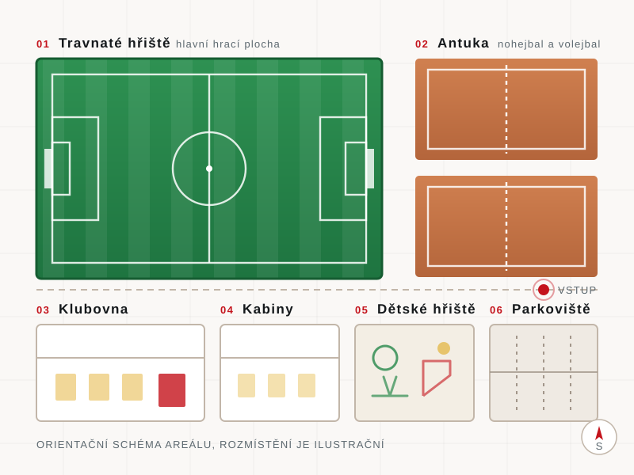

Forma
Poslední zápasy
Neprohráváme
Dvě utkání, dvě výhry, skóre 8:1. Do třetího kola jdeme z prvního místa.
V
V
–
–
–
Rváčov u Hlinska · Pardubický kraj
Tři generace, jeden dres. Na kopci nad Hlinskem kopeme do balonu už od roku 1927 — muži, dorost i žáci. Přijďte v neděli na hřiště, vstup je dobrovolný a pivo studené.
Sezona 2026/27
I.B třída, 6. liga mužů. Po postupu ze sedmé ligy vstupujeme do soutěže jako nováček — a zatím se držíme na špici.
Dvě utkání, dvě výhry, skóre 8:1. Do třetího kola jdeme z prvního místa.
Domácí zápasy hrajeme na travnaté ploše ve Rváčově. Brány otevíráme hodinu před výkopem, občerstvení a klubovna jsou v provozu.
Kudy k námZe života klubu
Od šesti do šedesáti
Ve Rváčově působí muži, dorost i žáci. Mládež bereme celoročně — stačí přijít na trénink.
Multifunkční komplex
Fotbal je jen začátek. Ve Rváčově máme travnaté hřiště, antukové kurty na nohejbal a volejbal, dětské hřiště a klubovnu, která je od roku 2007 srdcem celého areálu.

Hlavní plocha otevřená v roce 1994 utkáním se Sigmou Olomouc.
Kurty na nohejbal a volejbal pro turnaje i sousedské zápasy.
Prostor pro nejmenší, zatímco starší sourozenci hrají zápas.
Nové kabiny od roku 1996, klubovna od roku 2007.
Devět dekád
Od prvních doložených utkání v roce 1923 přes zájezd do Itálie až po vlastní klubovnu.
Oficiální zrod organizovaného fotbalu v obci. První doložená utkání se ale hrála už v roce 1923.
První velký sportovní úspěch klubu obnoveného v roce 1960 pod hlavičkou TJ Vysočina.
První mezinárodní utkání v historii klubu: Barcaccia – Rváčov 0:2 a Poli-Sportiva Sanpolese – Rváčov 1:4.
Slavnostní otevření utkáním S.K. Rváčov – Sigma Olomouc. Prohráli jsme 1:10, ale hřiště máme dodnes.

Založeno 1927
Rváčov má sotva pár set obyvatel. Přesto tu fotbal žije nepřetržitě téměř sto let — díky lidem, kteří sekají trávu, perou dresy a vozí děti na zápasy.
Bez nich by to nešlo
Nábor je otevřený
Hledáme kluky i holky do žáků a dorostu, ale i chlapy, kterým se stýská po kopačkách. První měsíc nezávazně, vybavení půjčíme.